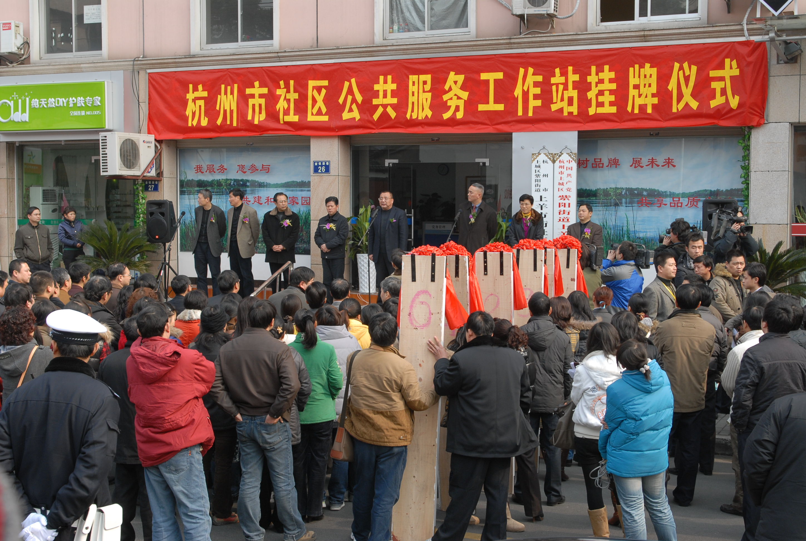

实施单位：市民政局
考核得分：1.9112
创新创优目标介绍：
自2000年全面推进城市社区建设以来，社区作为加强社会管理和提供基本公共服务的新平台，发挥着越来越重要的作用。党的十六届四中全会明确指出“加强社会建设和管理，推进社会管理体制创新”。十六届六中全会提出：逐步形成惠及全民的基本公共服务体系。2006年4月《国务院关于加强和改进社区服务工作的意见》（国发〔2006〕14号）指出：“大力推进公共服务体系建设，使政府公共服务覆盖到社区”。党的十七大报告指出：“把城乡社区建设成为管理有序、服务完善、文明祥和的社会生活共同体”。面对公共服务覆盖到社区、社区行政化倾向等新情况、新问题的出现，我们紧紧围绕“全省示范、全国领先”的社区建设目标，结合我市社区发展建设实际，积极探索社区管理体制改革，按照市委、市政府在2008年11月召开的全市和谐社区建设大会上提出的建立社区公共服务工作站的目标任务，经过一年多的探索实践，社区公共服务工作站在全市社区全面建立，基本形成了社区党组织、社区居委会、社区公共服务工作站“三位一体”的具有杭州特色的社区管理新体制，得到了民政部、省民政厅领导和有关专家学者的充分肯定。

一、建设社区公共服务工作站主要背景
（一）顺应新形势，推进社区体制改革的需要。随着经济体制改革的深入，大批国有企业转换经营机制，原有企业“包办”的事务推向了社会。在这样的历史背景下，党中央、国务院适时提出了“社区建设”的新思路，明确了城市中“社会”的主要载体是社区，并将解决相当一部分社会问题和社会矛盾的重任落实到社区。因此，推进社区体制改革，建立新型城市社区，对于深化改革、加快建立社会主义市场经济体制、建立完善的社会保障体系和社会化服务网络、提高居民生活质量和文明素质、维护社会稳定、密切党同人民群众的联系、强化城市基层基础工作、推进基层民主政治建设都具有重要意义。面对新形势，为了发挥好社区党组织领导核心作用，充分调动居民和社会力量参与社区建设的积极性，让社区更好地承担公共服务和社会管理职能，我们顺应新形势，从杭州实际出发，结合兄弟城市工作探索，建立了社区公共服务工作站，初步形成了社区管理体制的“杭州模式”。
（二）适应新要求，建立改革创新环境的需要。创新是杭州的历史传统，也是我市各项工作发展的动力。我市是新中国第一个居委会诞生地，是中国社区建设展示中心建设地，是全国第一个成建制地把老的居委会整合成新型社区居委会的城市，是最早在有100名以上在册党员的社区成立党委的城市，是率先将民政、劳动保障、公安部门的职能站（室）延伸到社区的城市，是全国第一个在楼道建立党支部的城市，也是率先将志愿者队伍和志愿者活动延伸到社区的城市。我市社区建设之所以能取得今天的成就，最重要的一点就是一直坚持以解放思想为先导、体制创新为动力。建立良好的改革创新环境，继承发展新要求，不仅是实现社区管理体制改革不断推进的需要，更是保持杭州社区建设继续走在全国全省前列的需要。
（三）满足新需求，提升社区服务能力的需要。我国现阶段的国情决定了社区必须承担一定的公共服务和社会管理职能，社区工作负担重在相当长一个历史时期里都会存在。目前社区居委会已成为政府为老百姓办实事、办好事的重要载体和平台。如背街小巷改善、庭院改善、危旧房改善等众多民生工程的实施都离不开社区居委会的参与，居民的需求得到了不断地满足。从理论上讲，社区居委会是群众自治组织，政府部门不能把“触角”伸到社区，而实际情况是有些涉及居民群众实际利益的政府工作不得不伸到社区，从而形成了矛盾。为化解这对矛盾，我们立足国情、市情，在《城市居委会组织法》法律框架下推进体制创新，深化新时期社区为民服务的能力，为老百姓不断办实事、办好事、解难事。
二、社区公共服务工作站建设推进情况
（一）明确推进时间。按照“先试点、后推开；先挂牌、后规范；先明责、后理顺”的思路进行。第一阶段为试点阶段。时间为2009年1月－4月。主要是做好宣传发动及试点的调查研究和摸底工作，制定具体实施方案开展宣传发动。通过召开现场会、座谈会和分析会等形式，研究解决试点工作中出现的问题，总结推广试点先进经验做法。第二阶段为全面推进阶段。时间为4月－10月。主要是形成全面推进社区公共服务工作站建设的实施意见，做好在全市范围的推开工作，在10月底前全面完成社区公共服务工作站建设。
（二）明确建设目标。以加强社区建设、管理、服务为重点，形成社区党组织、社区居委会、社区公共服务工作站“三位一体”、交叉任职、合署办公的社区管理新体制，使党和政府的各项方针政策和工作任务得到有效地落实，社区自治组织的作用得到有效地发挥，实现政府管理服务与基层群众自治的有效衔接和良性互动，努力把社区建设成为党组织领导核心作用明显、基层政权建设强化、民主自治水平提高、公共服务能力加强、社区管理机制完善、各种社会群体和谐相处的社会生活共同体。
（三）明确建设要求。一是坚持党的领导。坚持社区党组织在社区各类组织中的领导核心地位，发挥党对社区各项工作的领导作用；二是坚持资源整合。除社区警务室、卫生服务站以外，“条条”在社区设立的其他站（室），原则上全部纳入社区公共服务工作站，设立“一门式”服务大厅，全面提升社区服务工作水平。三是坚持交叉任职。三套机构实行交叉任职，社区公共服务工作站站长由社区党组织书记兼任，副站长由社区居委会主任兼任；书记、主任“一肩挑”的社区，副站长由社区党组织副书记或社区居委会副主任兼任。社区党组织、社区居委会的每一位成员和每一位社区专职工作人员都成为社区公共服务工作站工作人员。四是坚持权责明晰。社区党组织负责对社区各类组织实行领导；社区居委会负责履行社区自治组织功能；社区公共服务工作站承担社区公共服务和社会管理职能。社区公共服务工作站承担政府公共服务职能向社区延伸所涉及的工作，落实“人随事转、费随事转、权随事转”的准入制度。
（四）明确工作职责。社区公共服务工作站是社区行政事务的执行主体，是社区居民的服务机构。社区公共服务工作站在社区党组织的领导下，在政府职能部门的指导、帮助下，在社区居委会的监督下，承担上级交办的涉及居民利益的社区事务性工作，负责本社区各项行政事务，以及与社区管理服务相关的其他公共事务。其主要职责是：一是承担或协助政府有关部门在社区开展维稳综治、民政福利、劳动保障、卫生计生、科教文体、特殊困难群体管理服务等工作。二是落实社区居委会提出的工作计划，积极反映社情民意，开展社区公共事务和公益事业等方面工作。三是支持社会力量开展便民利民服务，整合调动社区内各种社会资源为居民办实事。四是承办由市、区两级党委和政府通过准入机制确定需要进入社区、与其工作手段相适应的其他工作任务。五是接受政府有关部门、社区党组织、社区居委会、辖区单位、居民群众和社会各界的监督、评议。
三、社区公共服务工作站建设主要难度
（一）模式确定难。社区工作站建设全国目前主要有四种模式。一是分设模式。社区工作站完全独立于社区居委会，社区工作站和社区居委会是并行的两个组织，分别承担不同的职能，造成社区工作 “两张皮”，很难拧成“一股绳”。二是下属模式。社区工作站作为社区居委会的工作机构，在社区党组织和社区居委会领导下开展工作，承担原由社区居委会担负的工作。三是条属模式。社区警务室、社区卫生服务站、社区帮扶救助站和劳动保障室，均属于这种模式。这些站（室）都是职能部门在社区的办事机构，人员、经费和管理均由职能部门负责。四是专干模式。区政府或街道办事处出钱聘用社区专干，并与居民选举产生的社区居委会成员一起办公，在社区居委会领导下从事开展工作。上述模式各有利弊，难以取舍。
（二）准入清理难。按照市委、市政府严格准入制，全面落实“人随事转、费随事转、权随事转”的要求，要市社区建设领导小组对进入社区的行政事务性工作进行清理。我市曾在2006年以市社区建设领导小组名义开展过部门工作任务进社区清理工作，当初从71项任务减少到26项。而现在对已进入社区的行政事务性工作，不符合“三个转”要求的都要取消，工作要求高、审核把关难度大。
（三）场所集中难。按照合署办公的原则，整合“条条”在社区设立的其他站（室），将社区党组织、居委会等所有管理服务用房统一规范功能设置，而加强和完善“一门式”服务大厅建设，由于场地、经费等因素，建设难度较大。
四、社区公共服务工作站建设的创新点
我们既吸取上述四种模式的长处，又较好地避免上述四种模式的弊端，是对下属模式和专干模式的整合、拓展、提升，是一个比较符合目前杭州社区实际的“第五模式”，其主要特点是交叉任职、分工负责，条块结合、合署办公。这一模式充分体现了党的领导、依法办事、精干高效的特点，不仅有利于增强社区党组织的领导核心地位，防止社区居委会边缘化，而且最大限度地整合了社区资源，避免了机构重复设置和社区资源浪费，从而有利于形成推进社区建设的强大合力，有利于社区更好地承担起日益繁重的公共服务和社会管理职能。
（一）理念创新、思路超前。提出社区党组织、社区居委会、社区公共服务站“三位一体”的社会复合组织概念。在组织体系架构上呈现为多层联结、上下结合、条块互通的网络状，三者共同形成一个息息相关、互通互联的有机体。体现主体多元复合、功能融合互补、目标多重统一、结构网络布局的特点，形成党为核心，“行政”为引导，“制度保障、监督考核、资源协调”为基础，“功能互补、服务强化、工作创新”为保障，“不同区域分类发展”为目标的复合组织构架，形成良性互动、运作有效的社会复合主体，最大限度实现社区公共服务、社区经济发展、社区居民自治的综合目标。使社区在密切党群干群关系上发挥桥梁作用，在提高居民生活水平和质量上发挥服务作用，在创建安居乐业美好环境上发挥促进作用，为杭州和谐社区建设发展奠定了组织保障。
（二）交叉任职、分工负责。社区党组织、社区居委会、社区公共服务工作站三套机构实行交叉任职、分工负责。一方面，三套机构实行交叉任职，社区公共服务工作站站长由社区党组织书记兼任，副站长由社区居委会主任兼任；书记、主任“一肩挑”的社区，副站长由社区党组织副书记或社区居委会副主任兼任。社区党组织、社区居委会的每一位成员和每一位社区专职工作人员都成了社区公共服务工作站工作人员，他们既是社会工作者，又是社会管理者。另一方面，三套机构又实行分工负责。社区党组织负责社区党建工作，负责对社区各类组织实行领导；社区居委会负责履行社区自治组织功能；社区公共服务工作站承担社区公共服务和社会管理职能。
（三）条块结合、合署办公。除了社区警务室、卫生服务站以外，“条条”在社区设立的其他站（室），全部纳入社区公共服务工作站，社区公共服务工作站同时对由上级部门主管、独立设置的社区警务室、卫生服务站也赋有指导协调监督职能。
（四）制度完善、服务提升。一是管理层级延伸。工作站建设以后各地社区管理服务方式方法发生了明显的变化，如采荷街道推行了“分级分片”社区管理新体制，实行“分级分片、一片三长、一岗多责”运行机制，通过分片、定岗、定责，社区管理层级更加明确，社区工作者服务责任更加清楚，主动服务、针对服务明显增多。二是管理手段先进。工作站的建设形成了复合型社区管理体制，这种体制有利于提高管理手段和服务水平。如下城区推行“前台受理、后台追踪、全程服务、全员考评”为主要内容的66810为民服务绩效追踪系统，建立网上工作平台，切实提高了社区工作效率，实现了服务与考核的对接。三是管理标准统一。市级层面制定《社区工作者管理规范》来实现“六个统一”，即人员统一招聘、合同统一备案、档案统一管理、晋级统一审批、任职统一报备、制度统一标准。同时，建立服务制度、首问责任制度、限时办结制度、否定报备制度、考勤制度等13项制度，量化绩效考核机制，实行优胜劣汰，切实增强社区工作者的责任意识和为民服务意识。推行社区工作者“人人立项目，承诺办实事”活动，以社区工作者为桥梁，建立“动态发现问题、立项解决问题、成效居民监督、街道有效激励”的长效为民服务机制，贴近群众需求，提供满意服务。
五、社区公共服务工作站建设主要成效
（一）公共服务平台有效搭建。工作站的设立促使“一门式”服务大厅建设得到了进一步加强和完善，实现了“敞开式”服务。整合完成了“条条”在社区设立的其他站（室），将劳动保障员、帮扶救助员、社区警务（综治）工作人员、社区城管工作人员、残疾人协管员、计生协管员、社区准物业专管员、社区责任医师以及各类协管员统一纳入了社区公共服务工作站管理，为社区居民提供“零距离”的服务。市社区建设领导小组印发《关于在全市深入推进社区公共服务工作站建设工作的实施意见》（杭社建〔2009〕4号），规范了社工站工作职责、功能设置、制度等，社区公共服务平台初步搭建。如下城区长庆街道搭建“五大平台”：电子政务平台、电话受理平台、值班主任平台、预约服务平台和社工走访平台，落实台前受理工作，以此细化并完善各项服务。江干区凯旋街道实施“三建四扩”工程，建“一门式大厅”、“亲子吧”、“茶吧”，扩建社区食堂、卫生服务站、“夕阳吧”、“健身吧”，形成了1000平方米的社区综合服务阵地。西湖、余杭、江干等区在农村也相继探索建立了公共服务工作站，将城市社区服务延伸到农村，真正实现了社区公共服务全覆盖。
（二）社区党建水平全面提升。社区党组织是党在社区全部工作和战斗力的基础，是社区各类组织和各项工作的领导核心。社区党组织充分发挥领导核心作用，努力形成以党组织为核心，功能健全、运转有序的社区组织体系。社区居委会、公共服务工作站开展工作得到社区党组织支持和保障；社区居委会、公共服务工作站自觉接受社区党组织的领导，驻区有关单位党组织参加的社区党建工作联席会议制度得到有效实施，社区党组织建设有新的进展。在实践过程中，党组织主要通过三项机制明显地完善了自身建设：第一，组织设置“纵向到底、横向到边”，以单元为综向，党委、党支部设在社区、单位、楼道、单元；以人群为横向，党小组设在流动群体、协会群体，基本形成了纵横交错的社区党组织网络，从而拉近更多人群靠近组织。第二，组织活动实行“工程建设”，展现亮点，出现了一批重点工程、精品工程，如社区党组织的“先锋工程”，流动党员“安家工程”、困难党员帮扶救助工程、“领头雁工程”等，形成了“党员会客厅”、“三帮六必谈”、“阳光服务站”等面对面服务模式，充分展示党组织的活动能力、服务能力、核心作用。第三，组织作风愈益亲民，社区民情恳谈会、民事调解会、民意听证会、民主评议会“四会”制度，畅通居民利益表达渠道，健全居民参与机制，也使社区党政工作与居民实际需求更加贴近。
（三）社区居民自治不断完善。社区居民委员会是居民自我管理、自我教育、自我服务的基层群众性自治组织，通过长期探索实践，形成了“五系自行、四会制衡、四制维权”的社区自治框架，促进居委会功能完善。五系自行，指在社区党组织领导下的五大组织系统各自运行：社区成员代表大会、社区议事委员会、社区居民委员会、民间社团、工青妇组织；四会制衡指通过四种会议制度（社区民情恳谈会、社区事务协调会、社区决策听证会、社区工作评议会）监督制衡社区建设事务；四制维权指四项工作制度保障权力自治：联合议事、党组织集体决策、机构执行、民主评议。建立民主促民生工作机制，畅通居民利益表达渠道，健全居民参与机制。搭建居民自我管理、自我服务、自我教育平台，如党员会客厅、草根质监站、退休人员“阳光俱乐部”、和事佬协会、楼宇自治会、民主评议庭、流动人员之家�D�D新家园协会等众多居民自治组织。目前，90%以上的社区建立了老年人、工青妇和残疾人组织，主城区社区民间组织1860多个、文体组织700多个、社区志愿服务组织420多个，在社区建设中的积极作用充分发挥，居民自治也获得居民的普遍认同。根据2009年8月开展的一次对全市社区的问卷调查，杭州市57.8％的居民参加过四会，72.6％的居民认为民主选举较好，66.7％的居民认为民主决策做得较好，67.0％的居民认为民主管理较好。在国家民政部在我市召开的纪念居委会组织法颁布实施20周年座谈会上，我市社区民主政治建设经验获得肯定。
（四）公共服务落地突破解决。一是严格工作准入。对行政部门下派到社区的工作实行严格的准入制度，全面落实“费随事转、人随事转、权随事转”，第二轮清理规范结果从2006年的26项减少为12项。二是推动产业化服务。围绕公共服务、市场化服务、志愿服务、邻里互助‘四位一体’社区服务体系建设的要求，社区公共服务工作站在积极发挥承担、引导和培育其他三类服务的职能，整合政府、市场和社会的共同力量，依托居民自治组织，进一步发展壮大社区便民服务社、社区楼道事物管理中心等社区社会组织，推动服务产业发展，为社区居民提供个性化的优质服务。三是坚持以城带乡。按照“资源共享、优势互补、互动互助、共建共促”的原则，通过城乡结对共建活动等形式，探索在农村社区建立社区公共服务工作站，搭建农村社区为民服务的“一站式”平台，推动公共服务向农村延伸，努力实现城市现代文明向农村传播、城市社区管理理念向农村辐射、城市社区服务方式向农村延伸的目标。
（五）社工队伍素质整体提升。市级层面通过制定《社区工作者管理规范》来实现管理标准“六个统一”，即人员统一招聘、合同统一备案、档案统一管理、晋级统一审批、任职统一报备、制度统一标准。同时，建立服务制度、首问责任制度、限时办结制度、否定报备制度、考勤制度等13项制度，量化绩效考核机制，实行优胜劣汰，切实增强社区工作者的责任意识和为民服务意识。推行社区工作者“人人立项目，承诺办实事”活动，以社区工作者为桥梁，建立一套“动态发现问题、立项解决问题、成效居民监督、街道有效激励”的长效为民服务机制，贴近群众需求，提供满意服务。探索出了“责任社工”、“片组户”民情联系、“前台受理、后台追踪、全程服务、全员考评”为主要内容的66810为民服务绩效追踪系统、“岗前培训、持证优先”、“绩效管理、居民考评”等一系列制度，来规范服务，提升质量。同时，市委组织部会同市民政局组织全市1345名社区书记主任进行培训，不断更新知识，以适应新形势发展的要求。自社区公共服务工作站成立以来，全市通过招聘考试，新增社工470名，补充了新鲜血液，为和谐社区建设增添了新的活力。
（六）“两个首要”要求充分落实。在当前国际金融危机下，社区公共服务工作站建站后的首要职责是实现充分就业。通过把促进社区充分就业纳入到社区公共服务职能的范围之内，积极开展送信息、送培训、送政策、送岗位活动，充分发挥就业平台作用，与各级党委政府一起切实做好就业再就业服务工作，努力实现失业一个，发现一个；发现一个，帮扶一个；帮扶一个，解决一个的目标要求。拱墅区在全国首创的社区失业预警干预机制的经验做法得到全面推行，“五项工程”（即ABCD分类安置就业工程、“岗位银行”工程、社会保障兜底工程、人力资源推荐进楼道工程、创业实训基地工程）动态消除了“零就业家庭”。同时以创业带动就业，全力优化创业环境，以失业人员创业服务园和大学生创业服务园为依托，采取项目无偿资助、创业期房租减免等方法积极鼓励扶持大学生自主创业，通过建立社区姐妹编织站、姐妹称心家政有限公司和夕阳红俱乐部，带动多名失业人员实现再就业，均取得了显著的成效。首批社会类重点工程挂职的全市47名社区公共服务工作站指导员充分发挥“宣传员”、“信息员”和“服务员”作用，内练素质、外塑形象，大胆工作，认真思考，努力当好社区工作站建设工作的“指导员、战斗员”。据不完全统计，自建站以来，全市社区公共服务工作站共介绍工作人次17216，解决14721人次就业。
最突出的成效是在全国和谐社区建设表彰会（苏州会议）上，我市5个城区、7个街道、10个社区被评为全国和谐社区建设示范单位，在省会城市名列第一，在副省级城市中名列第一。杭州“三位一体”社区管理体制新模式不仅得到了民政部领导的首肯，而且引起了与会代表的强烈反响，2009年10月23日《中国社会报》在“全国和谐社区建设工作会议综述”中对杭州“三位一体”的社区管理新体制给予了充分的肯定。对杭州各地创新社区管理体制中一些经验做法，也分期进行了专题报道。市委王国平书记、王金财副书记在12月30日全市创建和谐社区工作大会上，也充分肯定了建立社区公共服务工作站，探索“三位一体”社区管理新体制的显著成效。2009年12月21日，中国社区建设展示中心落成典礼在我市隆重举行，全国人大常委会副委员长严隽琪、国家民政部部长李学举、省长吕祖善等领导，对我市推行的三位一体社区管理新体制给予充分肯定。
建立社区公共服务工作站是对过去传统社区管理体制和工作模式的双重突破，是在新形势下完善社区服务功能和民生保障功能的大胆创新。一年来的工作实践表明，具有杭州特色的“三位一体”社区管理体制新模式充分体现了党的领导、依法办事、精干高效的特点，进一步增强了社区党组织的领导核心地位，防止社区居委会边缘化，最大限度地整合了社区资源，促进了政府公共服务社区全覆盖，形成了推进社区建设的强大合力。